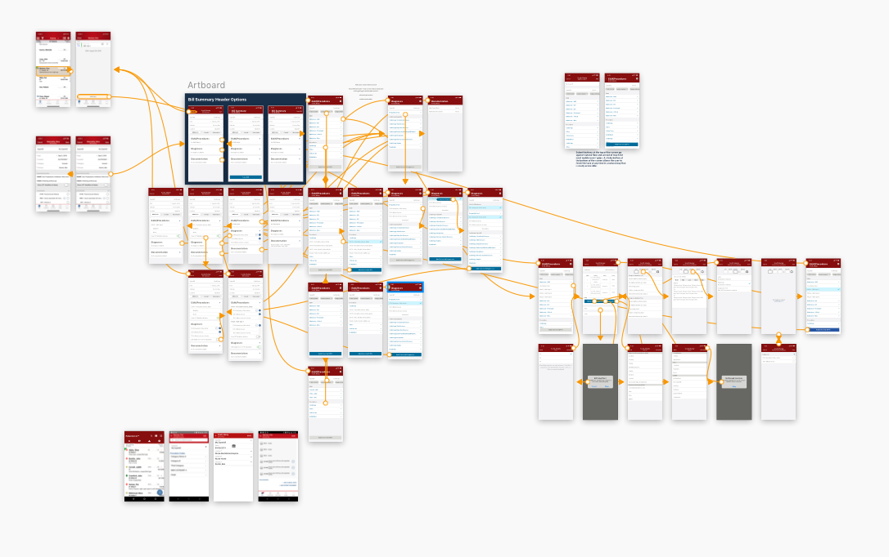

Deliverable: Wireframes
Programs: Sketch, Axure RP 8/9
The Ingenious Med (IM) charge capture platform has two distinct workflows: New Bill and New Superbill. They both do the same thing (create a charge) but one is more geared towards hospitalists and one is more for specialists. Maintaining two workflows causes technical problems, and they’re both so old they need to be rebuilt anyway. Rather than updating these two distinct workflows to accomplish the same task, the goal is to combine the two feature sets into one workflow - OneBill.

I began by researching the current state of each of the two workflows, documenting the feature sets and user flows for each. I found the overlap of the two flows and created a tentative combined flow that would be the basis for the design. A predecessor on my team had come up with OneBill concepts, and I was provided those as a starting point for design. I took those concepts in front of users and gathered feedback about the pros and cons. I learned that users want to only see what they need to see. I also learned that “New Bill” users are adamant that they want everything on one screen, whereas “New Superbill” users are fine with multiple screens.
My manager and I set up a design working session to turn the old concepts into a workable design. In that session, we altered the concepts to align with the flow I created during discovery, but didn’t get far into the functionality of the UI. My next steps were to add functionality to limit the view by persona. The Ingenious Med application can’t tell if a user is a hospitalist or specialist, so we can’t determine whether they prefer New Bill or New Superbill. I tried dividing the functionality of OneBill into distinct cards so that I could add functionality to each. I wanted to give users the option to hide or pin certain elements in order to customize their view, but after testing I found that that was too much autonomy for our users. I ended up deciding to utilize the selected “Bill Template” to determine which view to show the user. That way, if a New Bill user has a template with solely New Bill functionality, they would see a view that resembles what they are accustomed to (but better). Using the template as a source of truth helped me get around the issue that the IM application can’t tell what persona a user is.
